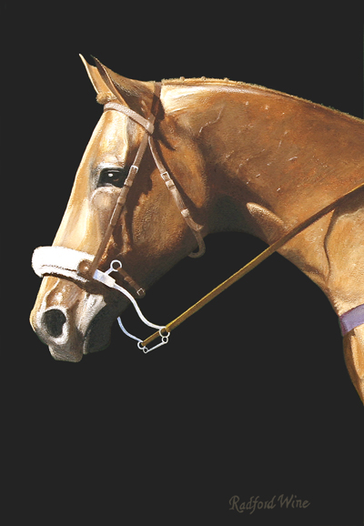

Commissions

When Olympic equestrian Wash Bishop wanted to have a portrait painted of his favorite horse, he contacted Radford Wine. At left is Wine’s work entitled “The Look of Eagles,” a term assigned to horses of noble and fine character. An additional and larger painting of the horse “Ask Away” was created by the artist for the same client.
Commission Radford Wine to create a beautiful painting that will bring joy to you and yours for generations to come. If you have a favorite landscape, seascape, abstract, even portrait in mind, contact the artist and a fine work will be created – for you.
Radford Wine has completed a commissioned portrait of American actor Robert Duvall and multiple works for private clients. For corporations or homeowners, multiple works can be created in the form of abstract, impressionism and more.
Contact the artist for an appointment or conversation about commissioning a painting.